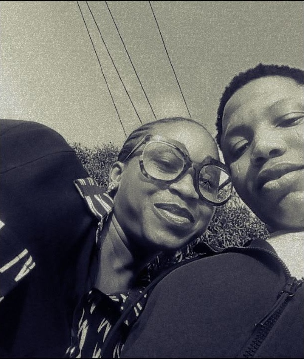
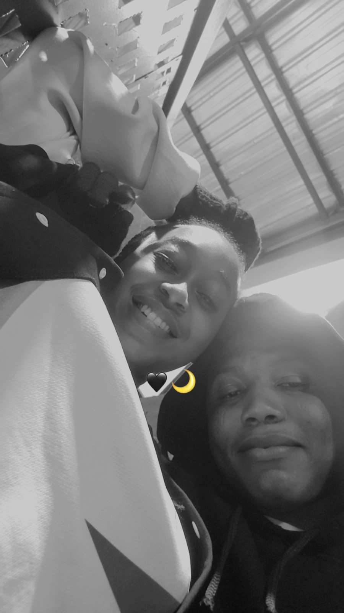
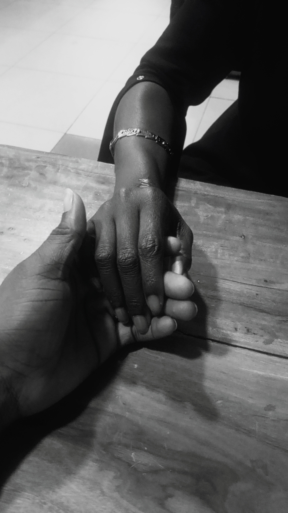

for habeebah
You have given me so much without ever asking for anything back. This is me finally asking myself: what would it look like to give some of it back to you?
part one
Nobody teaches people how to love well. Some just do it anyway, and you are one of the ones who just does it.
I think about the small things you never make a big deal of, checking on me before I even know I need it, feeding me like it's instinct and not effort, staying present on the days I am hard to be around. None of that is owed to me. All of it is a choice you keep making.
I don't say thank you enough for the choosing.

part two
There is comfort in you that I have never had to search for. Not performance, not convincing, just ease. The kind of closeness that makes a bad day survivable and a good day better.
You give me care in a hundred small forms and warmth in every form after that. I notice. I hold onto it longer than you probably realize.

part three
You call yourself Habeebah, and I have started to understand exactly why the word fits you. Beloved. Not as a title, but as a fact.
This page exists because I wanted the appreciation to leave my head and actually reach you, in writing, somewhere you can return to. For the meals. For the patience. For the intimacy. For choosing to show up, again and again, in ways big and small.

happy girlfriend's day
Thank you for loving me the way you do. I see it. I don't take it for granted.
Yours, Adio